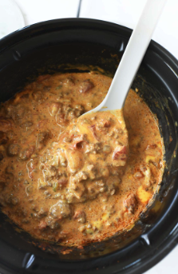

Taco Dip

Description
Don't let the simplicity of this recipe fool you. If you're in the need for a fast, easy dip to make for your next party, the simpler, the better. Trust Me!
Ingredients
- One Stick of Real Butter
- One pound ground beef (85% lean or higher)
- One 16oz. Bag of Shredded Cheese (Mexican Blend or your preferred flavor)
- Two 8oz. Cans of Black Beans (drained)
- One 8oz. jar of your favorite salsa
Directions
- Brown the ground beef in a skillet and drain some or all of the grease. Some may prefer to keep a little for extra flavor
- Season beef to taste, cover, and let simmer while continuing on to the next steps
- In a large saucepan melt the entire stick of butter
- Once butter is liquified, add the two cans of black beans
- Salt beans and butter to taste, stir and bring to a simmer for a few minutes
- Add the cooked and seasoned ground beef, stir and bring to a simmer once again
- Add the entire bag of cheese and stir continuously until the cheese is melted completely
- Add the entire jar of salsa and stir until blended evenly
- Pour taco dip into a dish and serve with your favorite chips
- For best results use a warming dish or crockpot to keep the dip melted